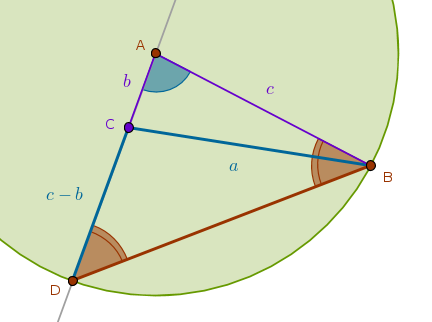
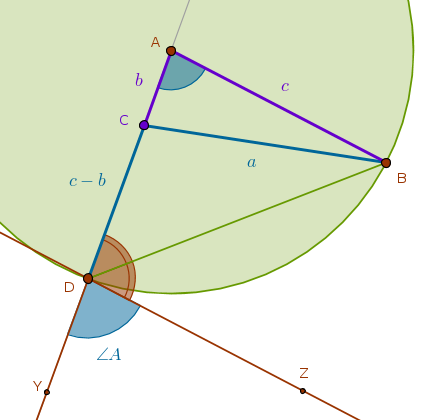
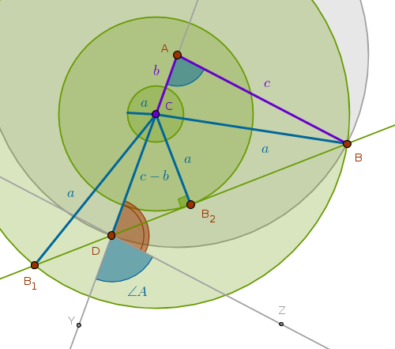
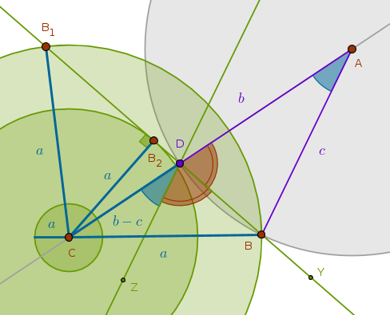
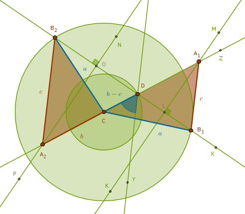

Given
\(a\), \(\angle A\), \(b - c\) or \(c - b\) - one side, the non-included angle and the difference of the remaining two sides which means that two cases must be considered: \(c > b\) and \(b > c\)
Analysis
Since the difference of two linear magnitudes is given, it follows that two cases must be considered:
$$c > b$$ $$b > c$$Case 1: \(c > b\)
Let us assume that the required triangle \(ABC\) has been constructed. From ECons we know how to construct the difference between two line segments. However, since the sides of the assumed triangle are known, all we need to do is construct a \(Cir(A, c)\) which will intersect the extended side \(AC\) at the point \(D\) marking the given linear difference between the sides \(c\) and \(b\):
From the definition of the \(Cir(A, c)\) it follows that \(\triangle DAB\) is isosceles and hence its angles at the base \(DB\), \(\angle ADB\) and \(\angle ABD\), are equal (B1P5). since the sum of the internal angles of a triangle is \(180^{\circ}\) (B1P32), we have:
$$\angle DAB + \angle ADB + \angle ABD = 180^{\circ}$$ $$\angle DAB + 2 \times \angle ADB = 180^{\circ}$$ $$180^{\circ} - \angle DAB =$$ $$180^{\circ} - \angle A =$$ $$2 \times \angle ADB$$If we construct the given angle \(A\) on the extension of the line segment whose length is equal to the given difference \(c - b\) with \(D\) as its vertex:
by constructing a straight line \(DZ\) parallel to \(AB\), for example, then:
$$\angle ZDY = \angle A$$ $$\angle ADZ = 180^{\circ} - \angle ZDY =$$ $$180^{\circ} - \angle A$$but using \(\triangle DAB\) we proved that:
$$180^{\circ} - \angle A = 2 \times \angle ADB$$and hence:
$$\angle ADZ = 2 \times \angle ADB$$but on the other hand:
$$\angle ADZ = \angle ADB + \angle BDZ$$ $$2 \times \angle ADB = \angle ADB + \angle BDZ$$ $$\angle ADB = \angle BDZ$$which means that the bisector of the supplementary angle \(ADZ\) and the side \(DB\) coincide which, in turn, means that the vertex \(B\) must be located somewhere on that bisector.
In an attempt to locate \(B\) by constructing the \(Cir(C, a)\) we observe that three outcomes are possible:
1) \(Cir(C, a)\) may intersect the bisector at two points, \(B\) and \(B_1\)
2) \(Cir(C, a)\) may touch the bisector at one point, \(B_2\)
3) \(Cir(C, a)\) may not even reach the bisector at all:
In the first two cases from the definition of the \(Cir(C, a)\) it follows that \(A\) is equidistant from \(D\) and whatever the second vertex may be, \(B\) for example (\(C\) being the first vertex). The locus of all such points is \(DB\)'s perpendicular bisector whose intersection with the line segment equal in length to the given difference \(c - b\) or its extension locates \(A\).
Note the similarity between this and the sSOsa construction with the exception that in the latter case we bisect the given angle itself - not its supplementary counterpart.
We already know that:
$$\angle ADB = 90 - \frac {A}{2}$$and from trigonometric identities we know that:
$$\sin(90 - \alpha) = \cos \alpha$$From the right triangle \(CB_2D\) it follows that if:
$$\cos \frac {A}{2} < \frac {a}{c - b}$$then it is possible to construct two triangles.
If:
$$\cos \frac {A}{2} = \frac {a}{c - b}$$then it is possible to construct one (right) triangle.
If:
$$\cos \frac {A}{2} > \frac {a}{c - b}$$then a triangle construction is impossible.
Construction Outline
Construct the given difference of two sides \(c - b\) at the vertexes \(C\) and \(D\). Construct the given angle \(A\) on the extension of \(CD\) with the vertex at the point \(D\). Bisect \(\angle A\)'s supplementary angle. Construct a \(Cir(C, a)\). That circle may conditionally intersect \(\angle A\)'s supplementary angle bisector, it may touch it or it may not reach it. The intersection locates two vertexes, \(B_1\) and \(B_2\), of two possible triangles. The single point of tangency locates one point, \(B\), of one possible (right) triangle. Bisect the line segment formed by the point \(D\) on one side and the point \(B\) or \(B_1\) or \(B_2\) on the other. The intersection of that perpendicular bisector with the given line segment \(c - b\) or its extension locates \(A\)
Case 2: \(b > c\)
This case is almost identical to the previous one except that since \(b\) is greater than \(c\) then their linear difference will be marked inside the line segment \(CA\) or within the side \(b\) itself - not its extension as in the \(c > b\) case. Here we will be constructing the angle \(A\) at the vertex \(D\) with \(CD\) as one of its sides:
From the right triangle \(CB_2D\) it follows that:
$$\angle DCB_2 = 90^{\circ} - \angle CDB_2$$but:
$$\angle B_2DY = 180^{\circ}$$and hence:
$$\angle CDB_2 = 180^{\circ} - \angle A - \angle ZDB$$Since:
$$\angle ZDB = \angle ADB = 90^{\circ} - \frac {A}{2}$$we have:
$$\angle CDB_2 = 180^{\circ} - \angle A - 90^{\circ} + \frac {A}{2} =$$ $$90 - \frac {A}{2}$$ $$\angle DCB_2 = 90^{\circ} - 90^{\circ} + \frac {A}{2} =$$ $$\frac {A}{2}$$From the right triangle \(CB_2D\) it follows that if:
$$\cos \frac {A}{2} < \frac {a}{c - b}$$then it is possible to construct two triangles.
If:
$$\cos \frac {A}{2} = \frac {a}{c - b}$$then it is possible to construct one (right) triangle.
If:
$$\cos \frac {A}{2} > \frac {a}{c - b}$$then a triangle construction is impossible.
Construction Outline
Construct the given difference of two sides \(c - b\) at the vertexes \(C\) and \(D\). Construct the given angle \(A\) with the vertex at the point \(D\) with \(CD\) as one of its sides. Bisect \(\angle A\)'s supplementary angle. Construct a \(Cir(C, a)\). That circle may conditionally intersect \(\angle A\)'s supplementary angle bisector, it may touch it or it may not reach it. The intersection locates two vertexes, \(B_1\) and \(B_2\), of two possible triangles. The single point of tangency locates one point, \(B\), of one possible (right) triangle. Bisect the line segment formed by the point \(D\) on one side and the point \(B\) or \(B_1\) or \(B_2\) on the other. The intersection of that perpendicular bisector with the given line segment \(c - b\) or its extension locates \(A\)
Sample Construction
Below is the \(b > c\) case construction of two possible triangles when:
$$\cos \frac {A}{2} < \frac {a}{b - c}$$You are encouraged to explore the remaining constructions yourself:
 $$C, Z$$ $$Ln(C, Z)$$ $$Cir(C, b - c)$$ $$Cir(C, b - c) \; \cap \; Ln(C, Z) = D \colon \quad CD = b - c$$ $$Y \colon \quad \angle YDC = \angle A$$ $$X \colon \quad \angle XDY = \angle XDZ$$ $$Cir(C, a)$$ $$Cir(C, a) \; \cap \; Ln(D, X) = B_1, B_2 \colon \quad CB_1 = CB_2 = a$$ $$Ln(C, B_1)$$ $$Ln(C, B_2)$$ $$K, L, M \colon \quad Ln(K, M) \; \cap \; Ln(D, B_1) = L \colon \quad LD = LB_1$$ $$Ln(K, M) \; \cap \; Ln(D, B_1) = A_1$$ $$N, O, P \colon \quad Ln(N, P) \; \cap \; Ln(D, B_2) = O \colon \quad OD = OB_2$$ $$Ln(N, P) \; \cap \; Ln(D, B_2) = A_2$$ $$Ln(A_1, B_1)$$ $$Ln(A_2, B_2)$$ $$\triangle A_1B_1C$$ $$\triangle A_2B_2C$$Note that in the second triangle, \(\triangle A_2B_2C\), the sides \(b\) and \(c\) trade places they occupy in the first triangle, \(\triangle A_1B_1C\), - lengthwise \(c\) becomes \(b\) and \(b\) becomes \(c\).
\(\blacksquare\)